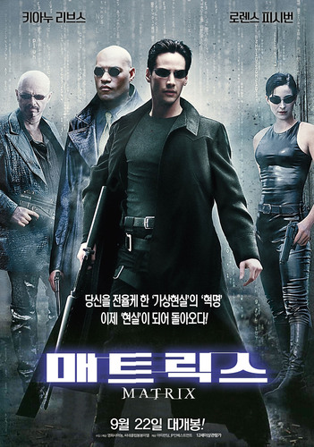

인공지능이 지배하는 가상 현실 '매트릭스' 속에서 진실을 깨닫고 인류를 구원하기 위해 싸우는 해커 네오의 이야기를 다룹니다.
철학적인 메시지와 함께 혁신적인 시각 효과를 선보여 SF 영화의 새로운 지평을 열었다고 평가받는 명작입니다.
낮에는 평범한 소프트웨어 개발자, 밤에는 해커로 활동하다 진정한 구원자 '네오'로 거듭납니다.
모피어스의 든든한 조력자이자 네오를 매트릭스 밖으로 이끄는 핵심 인물입니다.